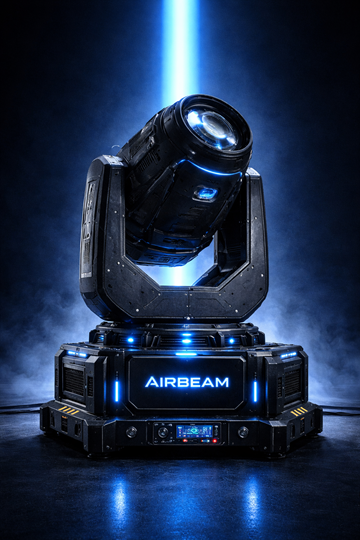

APRESENTAÇÃO DO PRODUTO
AirBeam V1 – Sistema de Feixe Atmosférico Direcionado
O AirBeam V1 é um sistema inovador desenvolvido para criar um feixe de luz altamente visível no ar, com controle atmosférico preciso e dispersão mínima no ambiente.
O projeto combina tecnologia óptica avançada com engenharia de fluxo laminar direcionado, permitindo um efeito visual sólido, controlado e eficiente.
Objetivo Técnico
O sistema foi projetado para:
- Criar um feixe visível com dispersão mínima
- Concentrar partículas apenas no eixo do feixe
- Reaproveitar parcialmente o fluido atmosférico
- Permitir controle total via protocolo DMX
O AirBeam V1 é ideal para shows, eventos, DJs, festivais e produções de alto impacto visual.
